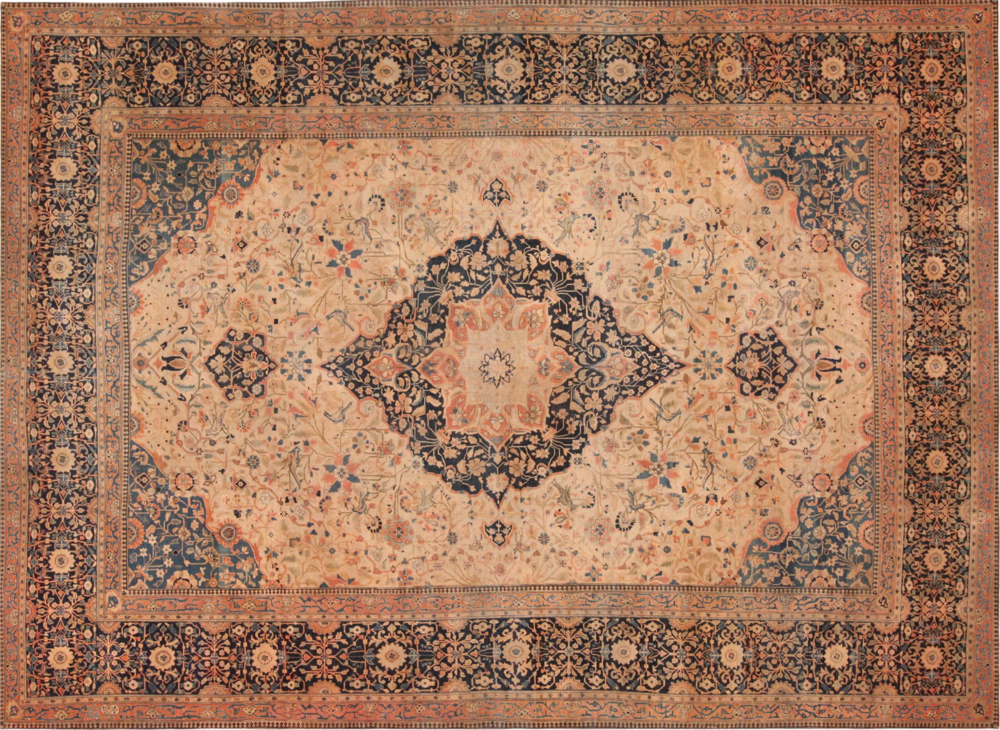
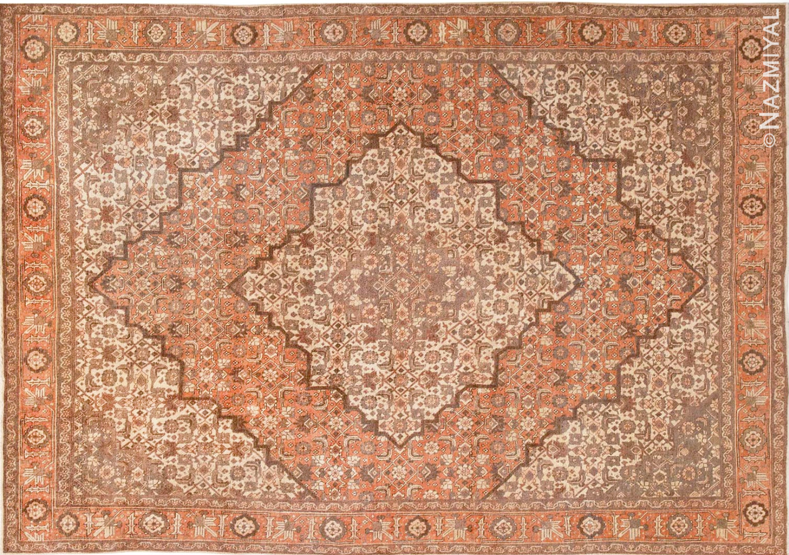
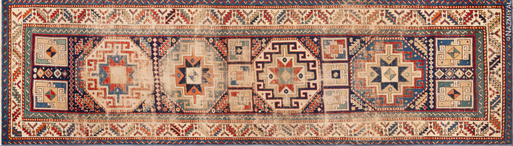
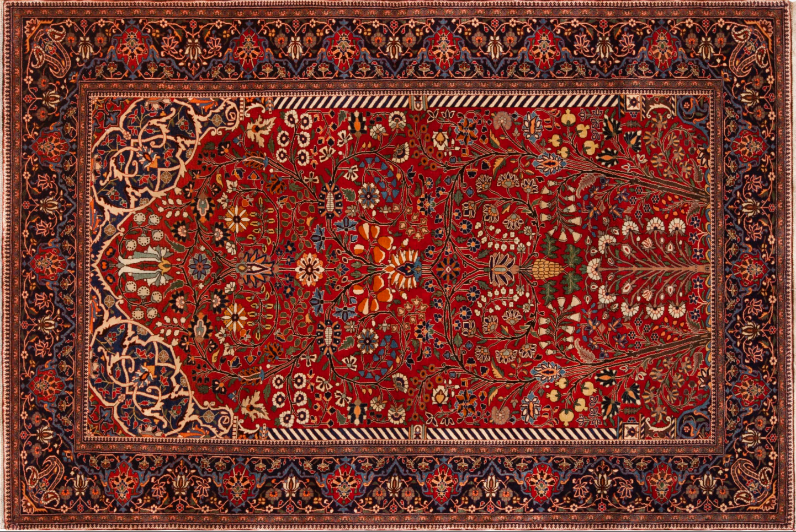
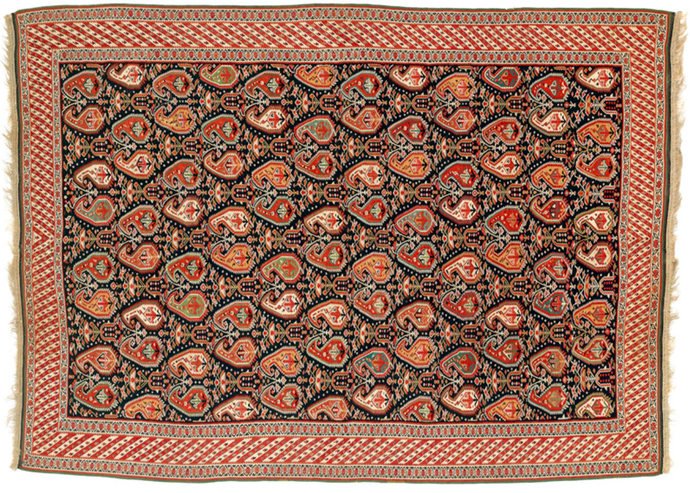
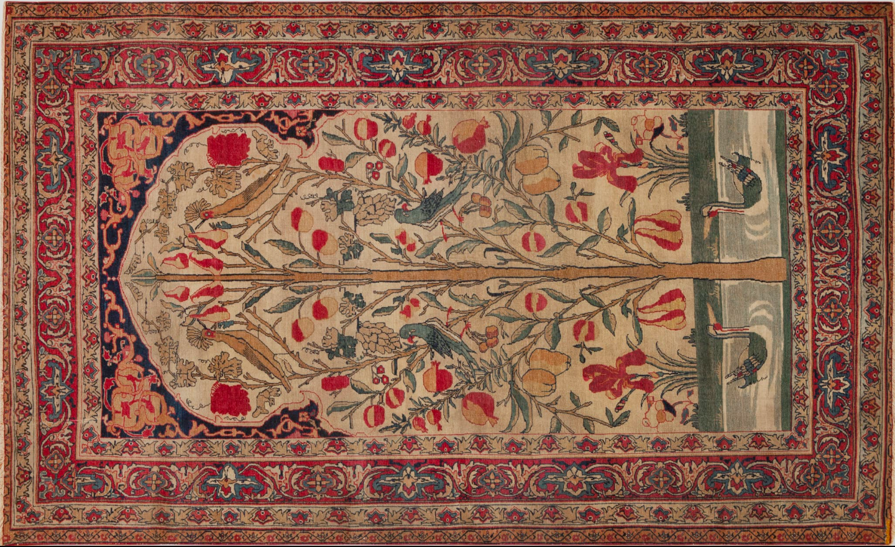
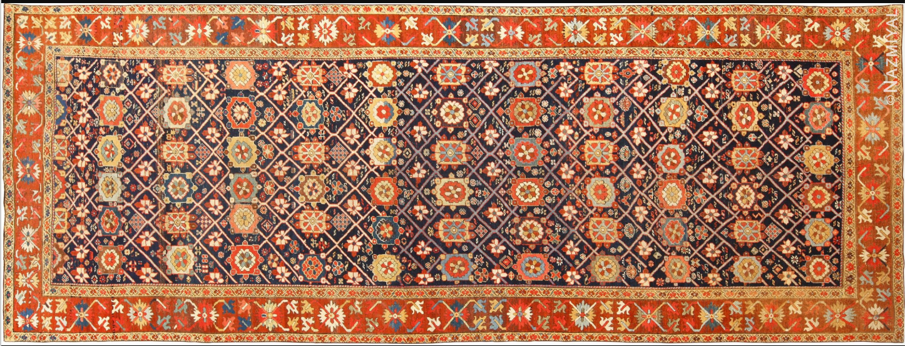

Persian carpets are traditional hand-knotted carpets that originate from Iran, formerly known as Persia. They feature intricate patterns requiring a high degree of craftsmanship that emerged from a long standing tradition of carpet weaving–a large part of Persian culture and Iranian art–that established techniques that have been developing from the savafaid period in the 16th and 17th century. Persian carpets are widely known to feature asymmetrical knots, cotton, wool or silk foundations and floral design systems.
Persian carpets are often classified under the broader category of “Oriental rugs”, mainly used as a convenient way to group racial groups from East Asia, North Africa and the Middle East. However this term is a generalization that does not accurately represent the specific cultural and regional distinctions of Persian carpets and other regional rugs.
Persian rug designs differ based on the region in which they were created and are classified by geography, ethnic group, production type (tribal, village, town), structure (knot style, foundation material, pile height) and design style, not just pattern. Persian rug designs were previously referred to by the city in which they were created; however, as their popularity increased, these styles became produced elsewhere and kept their original names.
The production of Persian carpets can be categorized as tribal, village made or town productions–classified based on the context in which they were produced.
- Tribal (Nomadic) rugs are weaved by native nomadic groups that focus on geometric and symbolic designs which commonly feature pattern irregularities.
- Village made rugs are characterized by some pattern repetition with a mix of both nomadic and urban design influences.
- Urban carpets are produced in professional workshops which showcase a high degree of symmetry and often feature curvilinear, floral medallion design systems.
Structural classifications of Persian carpets include the knot type, rug foundation and pile height.
- The rug's foundation is the framework on which the knots are tied. This includes the warp, the vertical threads stretched on the loom, and the weft, the horizontal threads woven in between the rows of knots to secure them. The Warp and Weft is made from either cotton, wool or silk.
- The knot type, symmetrical or asymmetrical, refers to the way that the pile yarn, fibers on the top layer of the carpet, are tied around the vertical wrap threads to weave the carpet's surface.
- The pile height is the length of the fibers on the surface of the carpet. The longer the pile, the fluffier the carpet.
For centuries Iranian artisans have featured natural dye traditions in their carpet all by sourcing vibrant dyes from nature.
- Red: sourced from Madder root plant (abundant in Iran) and imported dye from a small insect, the Cochineal
- Yellow: Saffron, Turmeric and sun dried Vine leaves
- Blue: Indigo mixed with pomegranate skin
- Brown: Walnut husks
- Beige: Barley plant
- Green: Mixing yellow and blue
Medallion:
A decorative symmetrical design element which is often the centrepoint of a persian carpet. Its designs are often built around the central medallion which can be made from a variety of motifs such as geometric, floral or decorative.

Pictorial:
Intricate woven storytelling design elements that diverge from traditional patterns to portray scenes or landscapes. These are Treated as “woven paintings" to be hung on walls.

Herat:
The Herati, otherwise known as the “Fish in the pond" pattern sometimes called by its Farsi name “Mahi” which means fish, features small fish like weavings across the carpet. The all over Herati pattern includes the same fish weaving all across the field without the central medallion.

Geometric:
Geometric Persian rugs feature crisp, angular patterns which are often tribal designs rooted in folk art.

Floral (Curvilinear, Shah Abbasi, vase):
These curvilinear patterns are made up of repeating intertwined flowers, vines and plant-like motifs. They sometimes feature vases from which the florals are extruding out of and are commonly referred to as the Shah Abbasi design which is characterized by intricate curvilinear floral patterns and stylized palmettes.

Garden:
An important symbolic four part garden layout, meant to signify the gardens of paradise which are separated by water channels into four quadrants.

Bodeh:
Farsi for “Brush” or “thicket” is a traditional flame or teardrop shaped motif with an upper curved end otherwise known as a paisley. It is often filled with clusters of flowers or leaves and is associated with fertility and the cycle of life and renewal.

Tree of Life (birds, animals):
A non-repetitive naturalistic motif with tree branches, birds and other animals which symbolize eternal life and growth. The tree of life is meant to showcase the connection between heaven and earth.

Mina Khani:
An all over field design with repeating daisy-like flowers interconnected by vines.
